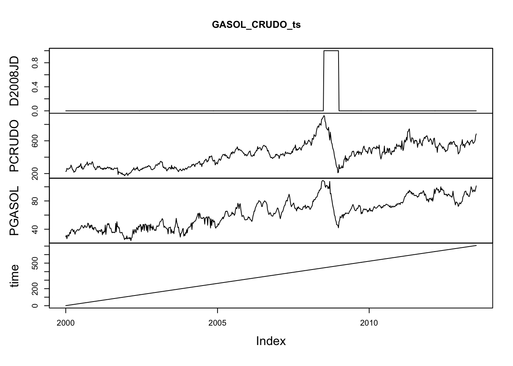
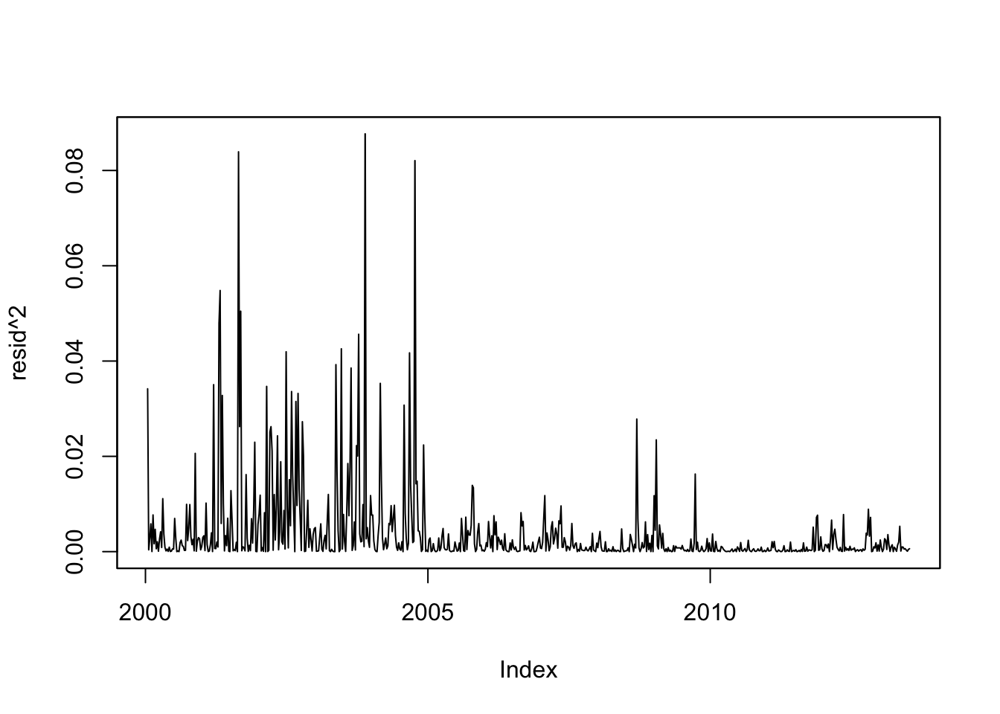
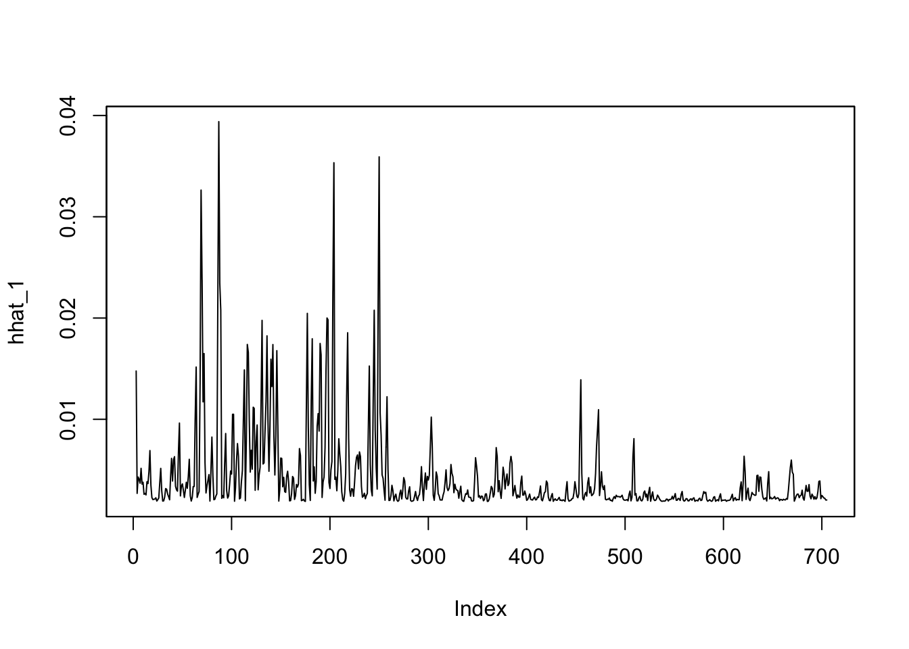
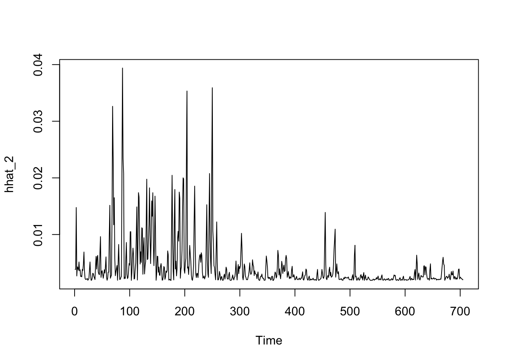
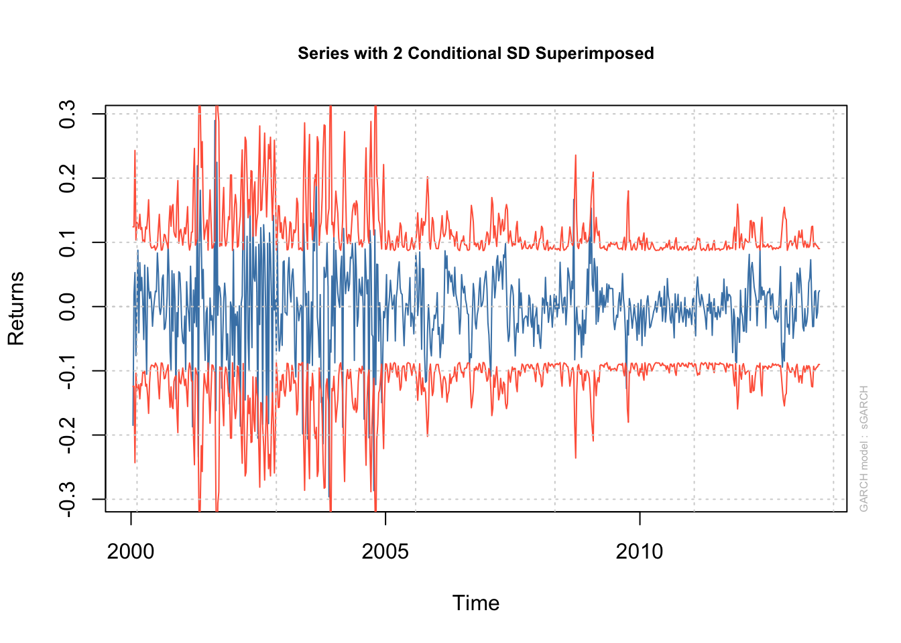
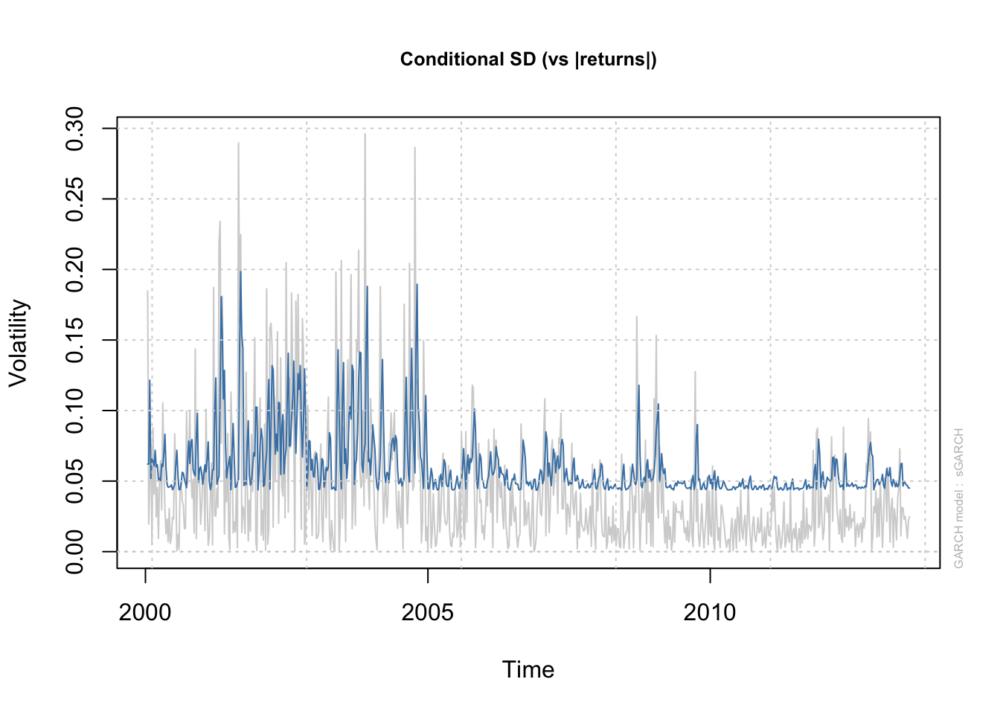
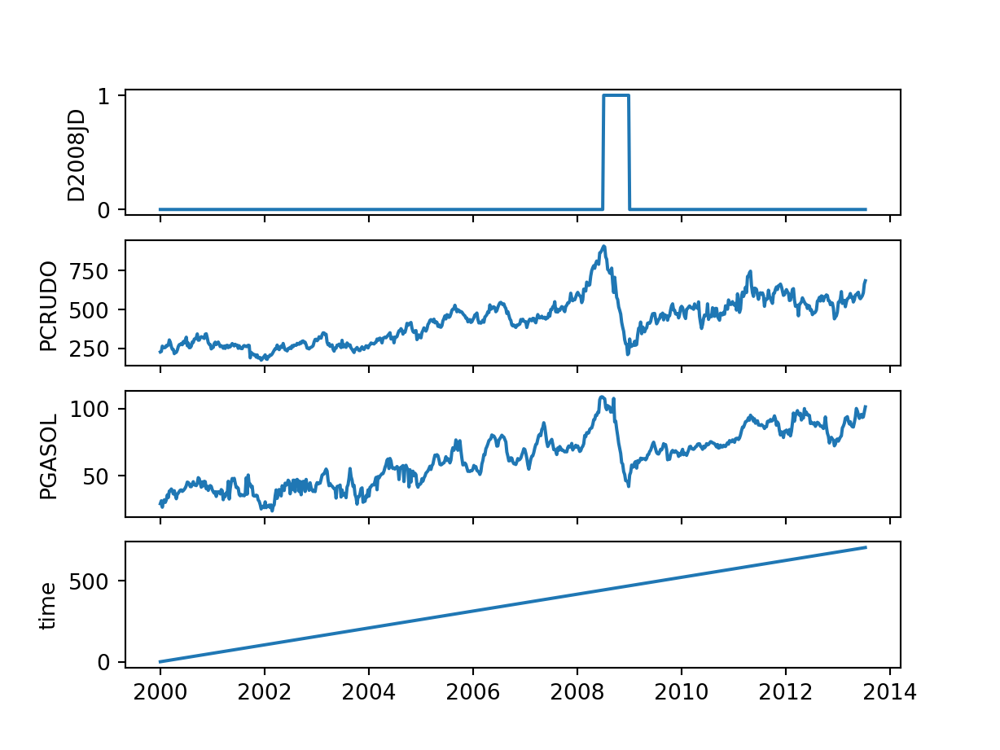
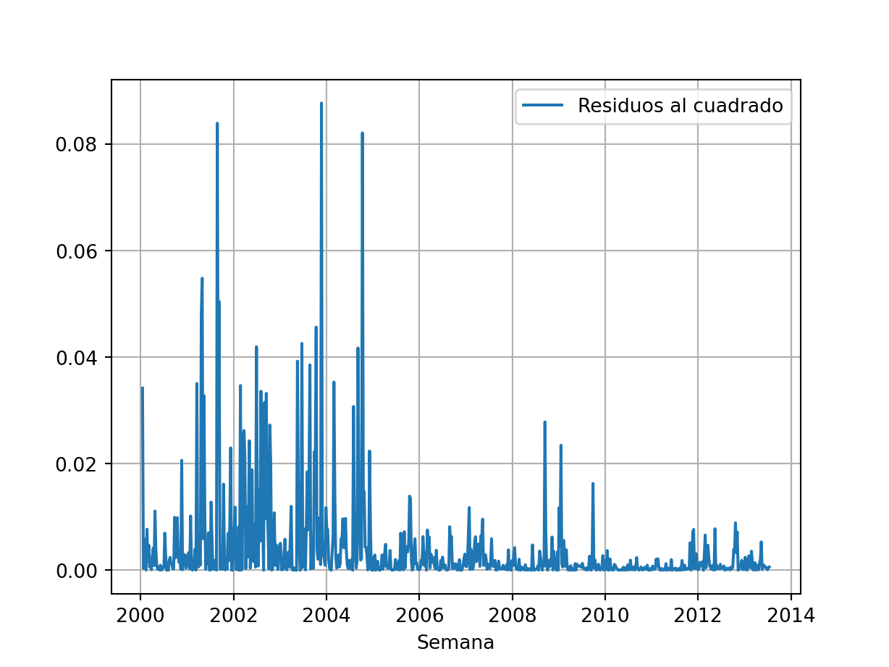
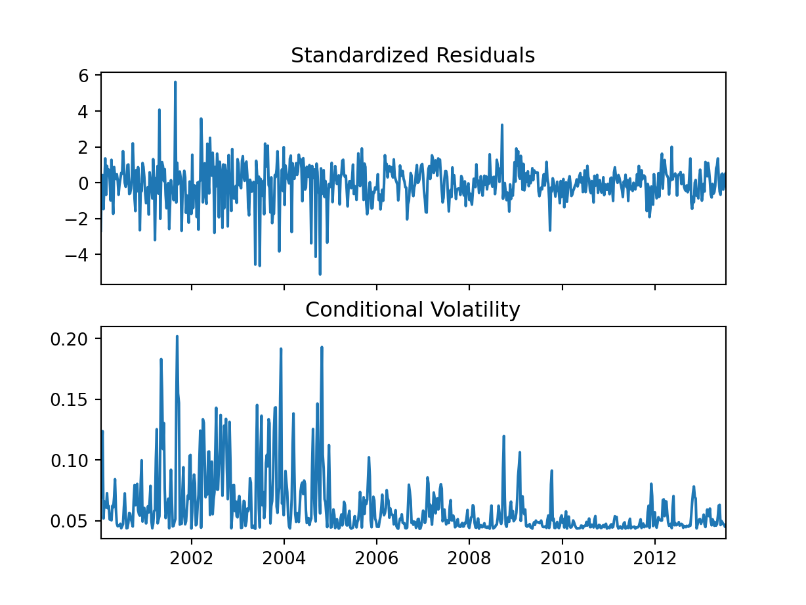

Aplicación 3.6 (Regresiones con volatilidad variable en el tiempo): Relación entre los precios de los carburantes y el precio del petroleo
En esta aplicación se estimará un modelo dinámico para el precio de la gasolina en el que los errores muestran clústeres de volatilidad (heteroscedasticidad autorregresiva condicional, ARCH).
Código R
# Lectura de librerías
library(tidyverse)
library(zoo)
library(dynlm)
library(nlWaldTest)
library(FinTS)
library(tseries)
library(rugarch)
# Lectura de datos
GASOL_CRUDO <- read_csv("data/GASOL_CRUDO.csv")
GASOL_CRUDO_ts <- read.zoo(GASOL_CRUDO)
# Gráfica de las series temporales
plot(GASOL_CRUDO_ts)
# Modelo dinámico para el precio de la gasolina (precio minorista)
dyn_model <- dynlm (log(PGASOL) ~ D2008JD + time +
L(log(PGASOL), 1:2) + L(log(PCRUDO),0:2),
data=GASOL_CRUDO_ts)
summary(dyn_model)
Time series regression with "zoo" data:
Start = 2000-01-15, End = 2013-07-13
Call:
dynlm(formula = log(PGASOL) ~ D2008JD + time + L(log(PGASOL),
1:2) + L(log(PCRUDO), 0:2), data = GASOL_CRUDO_ts)
Residuals:
Min 1Q Median 3Q Max
-0.296134 -0.027702 0.002138 0.029019 0.289684
Coefficients:
Estimate Std. Error t value Pr(>|t|)
(Intercept) -8.127e-02 6.474e-02 -1.255 0.209773
D2008JD -3.358e-02 1.332e-02 -2.520 0.011949 *
time 7.733e-05 2.371e-05 3.261 0.001162 **
L(log(PGASOL), 1:2)1 5.176e-01 3.600e-02 14.378 < 2e-16 ***
L(log(PGASOL), 1:2)2 3.003e-01 3.508e-02 8.560 < 2e-16 ***
L(log(PCRUDO), 0:2)0 1.524e-01 4.029e-02 3.781 0.000169 ***
L(log(PCRUDO), 0:2)1 1.117e-01 5.185e-02 2.154 0.031616 *
L(log(PCRUDO), 0:2)2 -1.304e-01 4.205e-02 -3.100 0.002012 **
---
Signif. codes: 0 '***' 0.001 '**' 0.01 '*' 0.05 '.' 0.1 ' ' 1
Residual standard error: 0.06243 on 697 degrees of freedom
Multiple R-squared: 0.9663, Adjusted R-squared: 0.966
F-statistic: 2858 on 7 and 697 DF, p-value: < 2.2e-16# Estimación de efectos parciales a corto y largo plazo
nlConfint(dyn_model, c("b[6]","(b[6]+b[7]+b[8])/(1-b[4]-b[5])")) value 2.5 % 97.5 %
b[6] 0.1523516 0.07338349 0.2313197
(b[6]+b[7]+b[8])/(1-b[4]-b[5]) 0.7338844 0.60592473 0.8618440nlWaldtest(dyn_model, "b[6]")
Wald Chi-square test of a restriction on model parameters
data: dyn_model
Chisq = 14.298, df = 1, p-value = 0.000156nlWaldtest(dyn_model, "(b[6]+b[7]+b[8])/(1-b[4]-b[5])")
Wald Chi-square test of a restriction on model parameters
data: dyn_model
Chisq = 126.36, df = 1, p-value < 2.2e-16# Contraste de heteroscedasticidad autoregresiva condicional (efectos ARCH)
resid <- as.zoo(dyn_model$residuals)
plot(resid)
plot(resid^2)
summary(dynlm(I(dyn_model$residuals^2) ~ L(I(dyn_model$residuals^2), 1:1)))
Time series regression with "numeric" data:
Start = 1(1), End = 704(1)
Call:
dynlm(formula = I(dyn_model$residuals^2) ~ L(I(dyn_model$residuals^2),
1:1))
Residuals:
Min 1Q Median 3Q Max
-0.019284 -0.002994 -0.002524 -0.000487 0.084493
Coefficients:
Estimate Std. Error t value Pr(>|t|)
(Intercept) 0.0029745 0.0003589 8.289 5.82e-16 ***
L(I(dyn_model$residuals^2), 1:1) 0.2166995 0.0365381 5.931 4.73e-09 ***
---
Signif. codes: 0 '***' 0.001 '**' 0.01 '*' 0.05 '.' 0.1 ' ' 1
Residual standard error: 0.008756 on 702 degrees of freedom
Multiple R-squared: 0.04771, Adjusted R-squared: 0.04636
F-statistic: 35.17 on 1 and 702 DF, p-value: 4.731e-09ArchTest(dyn_model$residuals, lag = 1)
ARCH LM-test; Null hypothesis: no ARCH effects
data: dyn_model$residuals
Chi-squared = 33.591, df = 1, p-value = 6.8e-09summary(dynlm(I(dyn_model$residuals^2) ~ L(I(dyn_model$residuals^2), 1:2)))
Time series regression with "numeric" data:
Start = 1(1), End = 703(1)
Call:
dynlm(formula = I(dyn_model$residuals^2) ~ L(I(dyn_model$residuals^2),
1:2))
Residuals:
Min 1Q Median 3Q Max
-0.016743 -0.002748 -0.002240 -0.000395 0.083559
Coefficients:
Estimate Std. Error t value Pr(>|t|)
(Intercept) 0.0025408 0.0003727 6.818 2.00e-11 ***
L(I(dyn_model$residuals^2), 1:2)1 0.1909697 0.0373769 5.109 4.18e-07 ***
L(I(dyn_model$residuals^2), 1:2)2 0.1413477 0.0370799 3.812 0.00015 ***
---
Signif. codes: 0 '***' 0.001 '**' 0.01 '*' 0.05 '.' 0.1 ' ' 1
Residual standard error: 0.008671 on 700 degrees of freedom
Multiple R-squared: 0.06865, Adjusted R-squared: 0.06599
F-statistic: 25.8 on 2 and 700 DF, p-value: 1.547e-11ArchTest(dyn_model$residuals, lag = 2)
ARCH LM-test; Null hypothesis: no ARCH effects
data: dyn_model$residuals
Chi-squared = 48.261, df = 2, p-value = 3.313e-11# Modelo GARCH para los errores del modelo
# Librería tseries
resid.ARCH <- garch(resid,c(0,2), trace=FALSE)
summary(resid.ARCH)
Call:
garch(x = resid, order = c(0, 2), trace = FALSE)
Model:
GARCH(0,2)
Residuals:
Min 1Q Median 3Q Max
-5.13757 -0.48437 0.04168 0.51027 5.64979
Coefficient(s):
Estimate Std. Error t value Pr(>|t|)
a0 1.892e-03 9.665e-05 19.573 < 2e-16 ***
a1 2.324e-01 5.917e-02 3.928 8.57e-05 ***
a2 3.742e-01 4.906e-02 7.628 2.40e-14 ***
---
Signif. codes: 0 '***' 0.001 '**' 0.01 '*' 0.05 '.' 0.1 ' ' 1
Diagnostic Tests:
Jarque Bera Test
data: Residuals
X-squared = 643.78, df = 2, p-value < 2.2e-16
Box-Ljung test
data: Squared.Residuals
X-squared = 0.00054561, df = 1, p-value = 0.9814hhat_1 <- as.zoo(resid.ARCH$fitted.values[,1]^2)
plot(hhat_1)
# Librería rugarch
resid_GARCH_spec <- ugarchspec(
mean.model = list(armaOrder=c(0,0), include.mean = FALSE),
variance.model = list(model="sGARCH", garchOrder=c(2,0)),
distribution.model ="norm")
resid_GARCH_fit <- ugarchfit(spec = resid_GARCH_spec, data = resid)
show(resid_GARCH_fit)
*---------------------------------*
* GARCH Model Fit *
*---------------------------------*
Conditional Variance Dynamics
-----------------------------------
GARCH Model : sGARCH(2,0)
Mean Model : ARFIMA(0,0,0)
Distribution : norm
Optimal Parameters
------------------------------------
Estimate Std. Error t value Pr(>|t|)
omega 0.001892 0.000187 10.1387 0.0e+00
alpha1 0.232407 0.057631 4.0327 5.5e-05
alpha2 0.374224 0.085864 4.3583 1.3e-05
Robust Standard Errors:
Estimate Std. Error t value Pr(>|t|)
omega 0.001892 0.000488 3.8799 0.000105
alpha1 0.232407 0.057430 4.0468 0.000052
alpha2 0.374224 0.159605 2.3447 0.019043
LogLikelihood : 1009.718
Information Criteria
------------------------------------
Akaike -2.8559
Bayes -2.8365
Shibata -2.8560
Hannan-Quinn -2.8484
Weighted Ljung-Box Test on Standardized Residuals
------------------------------------
statistic p-value
Lag[1] 6.347 0.011758
Lag[2*(p+q)+(p+q)-1][2] 7.360 0.009566
Lag[4*(p+q)+(p+q)-1][5] 9.434 0.012845
d.o.f=0
H0 : No serial correlation
Weighted Ljung-Box Test on Standardized Squared Residuals
------------------------------------
statistic p-value
Lag[1] 0.003479 9.530e-01
Lag[2*(p+q)+(p+q)-1][5] 11.673463 3.392e-03
Lag[4*(p+q)+(p+q)-1][9] 35.350902 1.454e-08
d.o.f=2
Weighted ARCH LM Tests
------------------------------------
Statistic Shape Scale P-Value
ARCH Lag[3] 0.06681 0.500 2.000 7.960e-01
ARCH Lag[5] 33.44106 1.440 1.667 8.336e-09
ARCH Lag[7] 43.09372 2.315 1.543 5.252e-11
Nyblom stability test
------------------------------------
Joint Statistic: 3.9216
Individual Statistics:
omega 3.7505
alpha1 0.9287
alpha2 0.8884
Asymptotic Critical Values (10% 5% 1%)
Joint Statistic: 0.846 1.01 1.35
Individual Statistic: 0.35 0.47 0.75
Sign Bias Test
------------------------------------
t-value prob sig
Sign Bias 0.98942 0.3228
Negative Sign Bias 0.09161 0.9270
Positive Sign Bias 0.99225 0.3214
Joint Effect 1.35262 0.7167
Adjusted Pearson Goodness-of-Fit Test:
------------------------------------
group statistic p-value(g-1)
1 20 57.87 8.379e-06
2 30 71.21 2.066e-05
3 40 73.38 7.103e-04
4 50 92.38 1.774e-04
Elapsed time : 0.09360504 hhat_2 <- as.zoo(resid_GARCH_fit@fit$sigma^2)
plot.ts(hhat_2) # ts.plot(resid_GARCH_fit@fit$sigma^2)
# Modo interactivo: permite seleccionar el tipo de gráfica
# plot(resid_GARCH_fit)
plot(resid_GARCH_fit, which=1)
plot(resid_GARCH_fit, which=3)
Código Python
# Lectura de librerías
import numpy as np
import pandas as pd
import matplotlib.pyplot as plt
import seaborn as sns
import statsmodels.api as sm
import statsmodels.formula.api as smf
import statsmodels.stats.api as sms
import statsmodels.stats.diagnostic as smsdiag
from statsmodels.compat import lzip
from arch import arch_model
# Lectura de datos y asignación del índice temporal
GASOL_CRUDO_ts = pd.read_csv("data/GASOL_CRUDO.csv", parse_dates=['date'], index_col='date')
GASOL_CRUDO_ts.info()<class 'pandas.core.frame.DataFrame'>
DatetimeIndex: 707 entries, 2000-01-01 to 2013-07-13
Data columns (total 4 columns):
# Column Non-Null Count Dtype
--- ------ -------------- -----
0 D2008JD 707 non-null int64
1 PCRUDO 707 non-null float64
2 PGASOL 707 non-null float64
3 time 707 non-null int64
dtypes: float64(2), int64(2)
memory usage: 27.6 KBGASOL_CRUDO_ts.head() D2008JD PCRUDO PGASOL time
date
2000-01-01 0 226.18 29.2 1
2000-01-08 0 229.43 31.4 2
2000-01-15 0 263.68 26.6 3
2000-01-22 0 256.43 30.9 4
2000-01-29 0 253.18 32.1 5GASOL_CRUDO_ts.indexDatetimeIndex(['2000-01-01', '2000-01-08', '2000-01-15', '2000-01-22',
'2000-01-29', '2000-02-05', '2000-02-12', '2000-02-19',
'2000-02-26', '2000-03-04',
...
'2013-05-11', '2013-05-18', '2013-05-25', '2013-06-01',
'2013-06-08', '2013-06-15', '2013-06-22', '2013-06-29',
'2013-07-06', '2013-07-13'],
dtype='datetime64[ns]', name='date', length=707, freq=None)# Asignación del formato semanal (opcional)
date_w = pd.date_range(start = '2000', periods = len(GASOL_CRUDO_ts.index), freq = 'W')
GASOL_CRUDO_ts.index = date_w
GASOL_CRUDO_ts.indexDatetimeIndex(['2000-01-02', '2000-01-09', '2000-01-16', '2000-01-23',
'2000-01-30', '2000-02-06', '2000-02-13', '2000-02-20',
'2000-02-27', '2000-03-05',
...
'2013-05-12', '2013-05-19', '2013-05-26', '2013-06-02',
'2013-06-09', '2013-06-16', '2013-06-23', '2013-06-30',
'2013-07-07', '2013-07-14'],
dtype='datetime64[ns]', length=707, freq='W-SUN')# Gráfica de las series temporales
plt.figure(1)
fig, ax = plt.subplots(4, 1, sharex = True)
ax[0].plot(GASOL_CRUDO_ts.D2008JD)
ax[0].set_ylabel('D2008JD')
ax[1].plot(GASOL_CRUDO_ts.PCRUDO)
ax[1].set_ylabel('PCRUDO')
ax[2].plot(GASOL_CRUDO_ts.PGASOL)
ax[2].set_ylabel('PGASOL')
ax[3].plot(GASOL_CRUDO_ts.time)
ax[3].set_ylabel('time')
plt.show()
# Modelo dinámico para el precio de la gasolina (precio minorista)
GASOL_CRUDO_ts['l_PGASOL'] = np.log(GASOL_CRUDO_ts['PGASOL'])
GASOL_CRUDO_ts['l_PCRUDO'] = np.log(GASOL_CRUDO_ts['PCRUDO'])
formula = 'l_PGASOL ~ D2008JD + time + l_PGASOL.shift(1) + l_PGASOL.shift(2) + l_PCRUDO + l_PCRUDO.shift(1) + l_PCRUDO.shift(2)'
dyn_model = smf.ols(formula, data = GASOL_CRUDO_ts)
lm_dyn_model = dyn_model.fit()
print(lm_dyn_model.summary()) OLS Regression Results
==============================================================================
Dep. Variable: l_PGASOL R-squared: 0.966
Model: OLS Adj. R-squared: 0.966
Method: Least Squares F-statistic: 2858.
Date: Wed, 15 Nov 2023 Prob (F-statistic): 0.00
Time: 09:40:53 Log-Likelihood: 959.11
No. Observations: 705 AIC: -1902.
Df Residuals: 697 BIC: -1866.
Df Model: 7
Covariance Type: nonrobust
=====================================================================================
coef std err t P>|t| [0.025 0.975]
-------------------------------------------------------------------------------------
Intercept -0.0813 0.065 -1.255 0.210 -0.208 0.046
D2008JD -0.0336 0.013 -2.520 0.012 -0.060 -0.007
time 7.733e-05 2.37e-05 3.261 0.001 3.08e-05 0.000
l_PGASOL.shift(1) 0.5176 0.036 14.378 0.000 0.447 0.588
l_PGASOL.shift(2) 0.3003 0.035 8.560 0.000 0.231 0.369
l_PCRUDO 0.1524 0.040 3.781 0.000 0.073 0.231
l_PCRUDO.shift(1) 0.1117 0.052 2.154 0.032 0.010 0.213
l_PCRUDO.shift(2) -0.1304 0.042 -3.100 0.002 -0.213 -0.048
==============================================================================
Omnibus: 88.212 Durbin-Watson: 1.949
Prob(Omnibus): 0.000 Jarque-Bera (JB): 384.370
Skew: -0.482 Prob(JB): 3.43e-84
Kurtosis: 6.487 Cond. No. 1.15e+04
==============================================================================
Notes:
[1] Standard Errors assume that the covariance matrix of the errors is correctly specified.
[2] The condition number is large, 1.15e+04. This might indicate that there are
strong multicollinearity or other numerical problems.# Estimación de efectos parciales a corto y largo plazo
b = lm_dyn_model.params[0:]
# Multiplicador de corto plazo
b[5].round(3)0.152# Multiplicador de largo plazo
((b[5]+b[6]+b[7])/(1-b[3]-b[4])).round(3)0.734# Contraste de heteroscedasticidad autoregresiva condicional (efectos ARCH)
residuals = lm_dyn_model.resid
plt.figure(5)
plt.plot(residuals, label='Residuos')
plt.xlabel('Semana')
plt.grid(True)
plt.legend()
plt.show()
plt.figure(6)
plt.plot(residuals**2, label='Residuos al cuadrado')
plt.xlabel('Semana')
plt.grid(True)
plt.legend()
plt.show()
# Test de Engle
name = ['LM statistic', 'Chi^2 p-val', 'F statistic', 'F p-val']
E_test_1 = smsdiag.het_arch(residuals, nlags=1)
lzip(name,E_test_1)[('LM statistic', 33.59125111341629), ('Chi^2 p-val', 6.79978851875406e-09), ('F statistic', 35.17415057721384), ('F p-val', 4.731167717319399e-09)]print(pd.DataFrame([np.round(E_test_1, 3)], columns=name)) LM statistic Chi^2 p-val F statistic F p-val
0 33.591 0.0 35.174 0.0E_test_2 = smsdiag.het_arch(residuals, nlags=2)
lzip(name,E_test_2)[('LM statistic', 48.26143118405129), ('Chi^2 p-val', 3.312557106655711e-11), ('F statistic', 25.79884814936918), ('F p-val', 1.5467136016750854e-11)]print(pd.DataFrame([np.round(E_test_2, 3)], columns=name)) LM statistic Chi^2 p-val F statistic F p-val
0 48.261 0.0 25.799 0.0# Modelo GARCH para los errores del modelo
garch_model = arch_model(residuals, mean='Zero', vol='GARCH', p=2, q=0, dist='normal')
mv_garch_model = garch_model.fit()Iteration: 1, Func. Count: 5, Neg. LLF: -440.3038423896095
Iteration: 2, Func. Count: 13, Neg. LLF: -848.4746617760027
Iteration: 3, Func. Count: 18, Neg. LLF: -40.92526664364976
Iteration: 4, Func. Count: 23, Neg. LLF: -997.1901354377039
Iteration: 5, Func. Count: 28, Neg. LLF: 4501163.304429701
Iteration: 6, Func. Count: 33, Neg. LLF: -991.4353946793708
Iteration: 7, Func. Count: 38, Neg. LLF: -1009.757502482586
Iteration: 8, Func. Count: 42, Neg. LLF: -1009.9254909725157
Iteration: 9, Func. Count: 46, Neg. LLF: -1009.9299853001154
Iteration: 10, Func. Count: 50, Neg. LLF: -1009.9303155884547
Iteration: 11, Func. Count: 54, Neg. LLF: -1009.9303168451199
Iteration: 12, Func. Count: 57, Neg. LLF: -1009.9303168451216
Optimization terminated successfully (Exit mode 0)
Current function value: -1009.9303168451199
Iterations: 12
Function evaluations: 57
Gradient evaluations: 12print(mv_garch_model) Zero Mean - ARCH Model Results
==============================================================================
Dep. Variable: None R-squared: 0.000
Mean Model: Zero Mean Adj. R-squared: 0.001
Vol Model: ARCH Log-Likelihood: 1009.93
Distribution: Normal AIC: -2013.86
Method: Maximum Likelihood BIC: -2000.19
No. Observations: 705
Date: Wed, Nov 15 2023 Df Residuals: 705
Time: 09:40:53 Df Model: 0
Volatility Model
============================================================================
coef std err t P>|t| 95.0% Conf. Int.
----------------------------------------------------------------------------
omega 1.8836e-03 3.690e-04 5.105 3.309e-07 [1.160e-03,2.607e-03]
alpha[1] 0.2349 6.195e-02 3.792 1.494e-04 [ 0.114, 0.356]
alpha[2] 0.3902 0.155 2.518 1.181e-02 [8.646e-02, 0.694]
============================================================================
Covariance estimator: robustfig = mv_garch_model.plot()
plt.show()